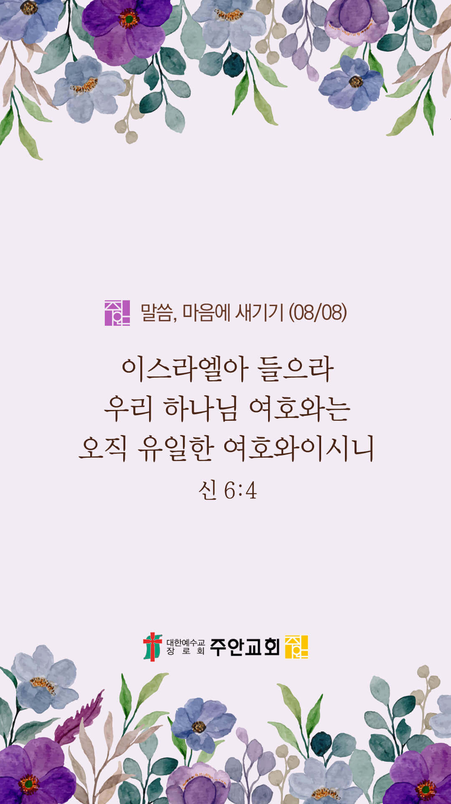

온라인 기도실 안내
2021년 08월08일(일)~08월 14일(토)
- 온라인 기도실은 온 회중이 함께 주님 앞으로 나아가는 자리입니다
- 30분 정도 여유를 가지고 하시기 바랍니다
- 말씀과 묵상, 찬양과 기도로 나아갑니다
- 배경 음악이 나올 수 있습니다 볼륨을 조절해주세요
준비가 되셨으면 아래의 버튼을 눌러주세요
할렐루야
내 영혼아 여호와를 찬양하라
시 146:1
- 가사를 묵상하며 읽습니다
주를 향한 나의 사랑을
주께 고백하게 하소서
아름다운 주의 그늘아래 살며
주를 보게 하소서
주님의 말씀 선포될 때에
땅과 하늘 진동하리니
나의 사랑 고백하리라
나의 구주 나의 친구
할렐루야
내 영혼아 여호와를 찬양하라
시 146:1
- 가사를 묵상하며 읽습니다
부드러운 주의 속삭임
나의 이름을 부르시네
주의 능력 주의 영광을 보이사
성령을 부으소서
메마른 곳 거룩해지도록
내가 주를 찾게 하소서
내 모든 것 주께 드리리
나의 구주 나의 친구
할렐루야
내 영혼아 여호와를 찬양하라
시 146:1
- 가사를 묵상하며 읽습니다
온맘으로 주를 바라며
나의 사랑 고백하리라
나를 향한 주님의 그 크신 사랑
간절히 알기 원해
주의 은혜로 용서 하시고
나를 자녀로 삼아 주셨네
나의 사랑 고백하리라
나의 구주 나의 친구
할렐루야
내 영혼아 여호와를 찬양하라
시 146:1
주를 향한 나의 사랑은 cover by Gina
위의 찬양이 끝나면 말씀읽기를 눌러주시면 됩니다
주의 말씀은 내 발에 등이요
내 길에 빛이니이다 (시119:105)
오늘의 말씀입니다
음악 소리가 크면 조절하시기 바랍니다

마음의 묵상
신 6:4
“이스라엘아 들으라 우리 하나님 여호와는 오직 유일한 여호와이시니”
1. 당신에게 하나님은 어떤 분으로 고백되나요?
2. 하나님을 “오직 유일한 여호와”로 믿고 계신가요?
3. 오직 하나님만 의지하는 가족 모두가 되길 잠시 기도합시다
주님은 저의 유일한 피난처이십니다
회개, 삶의 방향을 바꾸는 결정
축복의 말, 용서의 말로 가득한 입술이 되길...
“비판하지 말라 그리하면 너희가 비판을 받지 않을 것이요 정죄하지 말라 그리하면 너희가 정죄를 받지 않을 것이요 용서하라 그리하면 너희가 용서를 받을 것이요”
- 누가복음 6:37 -
3분 정도 회개하며 주님 앞에 나아갑니다
사슴이 시냇물을 찾기에 갈급함 같이
시42:1
- 다음의 말씀을 소리 내어 읽습니다
[누가복음 6:43-45]
43 못된 열매 맺는 좋은 나무가 없고 또 좋은 열매 맺는 못된 나무가 없느니라
44 나무는 각각 그 열매로 아나니 가시나무에서 무화과를, 또는 찔레에서 포도를 따지 못하느니라
45 선한 사람은 마음에 쌓은 선에서 선을 내고 악한 자는 그 쌓은 악에서 악을 내나니 이는 마음에 가득한 것을 입으로 말함이니라
하나님 나라
1. 하나님의 나라가 속히 이 땅에 임하게 하소서
하나님 아버지,
전 세계에 바이러스와 변이 바이러스의 확산이 그치게 하소서. 치료제를 개발하고 있는 의료진들에게 지혜의 영을 충만히 내려주사,
속히 치료제가 개발되게 하소서. 백신을 제대로 공급받지 못하는 나라들에게도 백신이 원활하게 공급되어, 더 이상 바이러스가 전파되지 않게 하소서.
간절한 마음으로 3분 정도 기도합시다
남과 북
2. 남북한이 속히 복음으로 통일되게 하소서
하나님 아버지,
바이러스와 가뭄과 기근으로 인해 고통 받고 있는 북한 주민들을 긍휼히 여겨주소서. ‘남북 통신 연락선 복원’이 한반도 평화의 새로운 발걸음이
되게 하셔서 북한의 닫힌 문이 열리게 하시고, 북한에 필요한 식량과 의약품, 그리고 복음이 전파되어 북한 주민들의 영육이 살아나게 하소서.
간절한 마음으로 3분 정도 기도합시다
대한민국
3. 우리나라가 하나님을 경외하는 나라가 되게 하소서
하나님 아버지,
바이러스와 변이 바이러스의 확산이 그치게 하시고, 전 국민들에게 백신이 접종되게 하소서.
백신 접종을 주관하는 방역당국과 의료진들에게 지혜와 능력을 주시고,
그들이 지치지 않게 새 힘을 더하여 주소서. 전 국민들도 방역지침을 성실하게 지켜서 현재의 어려움을 잘 극복하게 하소서.
간절한 마음으로 3분 정도 기도합시다
한국교회
4. 한국교회가 성령으로 새롭게 부흥되게 하소서
하나님 아버지,
한국교회가 고난의 때일수록 더욱 더 기도하며 말씀 위에 서는 성령충만한 교회가 되게 하소서. 온라인 예배를 준비하는 모든 사역자들에게 능력을
더하여 주시고, 온라인 예배를 드리는 모든 가정들마다 성령의 충만한 임재가 임하게 하소서. 한국 교회의 온라인 예배와 교육이 다음세대에도
복음을 전하는 복음의 통로가 되게 하소서.
간절한 마음으로 3분 정도 기도합시다
주안교회
5. 주안교회가 다음 세대를 세우는 선교적 교회가 되게 하소서
하나님 아버지,
주안의 모든 성도들이 언제나 내 모습 이대로 주님 앞에 나아가 주님의 도우심의 역사를 경험하게 하소서. 우리의 부족함과 죄를 숨기지 말고, 날마다 통회하며 자복하게 하시고,
우리의 간절한 기도와 중보를 통하여 병든 심령, 깨어진 가정, 무너진 한국교회, 혼돈 가운데 있는 나라와 민족, 그리고 코로나로 인하여 신음하고 있는 지구촌이 회복되고 치유되는 역사가 있게 하소서.
간절한 마음으로 3분 정도 기도합시다
주안교회 교회학교
하나님 아버지,
주안의 다음세대들이 믿음 안에서 든든히 성장하게 하소서. 청소년국(8/13-15)에서 진행되는 여름사역을 지켜주시고, 주안의 모든 아이들이 예수님을 진심으로 구주로 고백하고 세상의 빛과 소금이 되게 하소서.
간절한 마음으로 3분 정도 기도합시다
감사의 기도
- 오늘 기도를 인도하신 주님께 감사를 올려드립니다
- 아래의 구절을 읽고 주님께 감사의 마음을 올려드립시다
“내가 영으로 기도하고 또 마음으로 기도하며 내가 영으로 찬송하고 또 마음으로 찬송하리라”
- 고린도전서 14장 15절 -
고요한 가운데 잠시 침묵하시기 바랍니다
파송, 세상을 향하여
- 오늘의 온라인 기도를 마쳤습니다
기도를 들으신 주님께서 평안히 가라 하십니다
주님께서 우리와 함께 하시니 두려울 것이 없습니다
새벽을 깨우며
- 새벽기도회 안내입니다